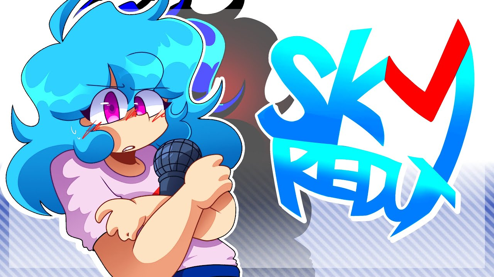
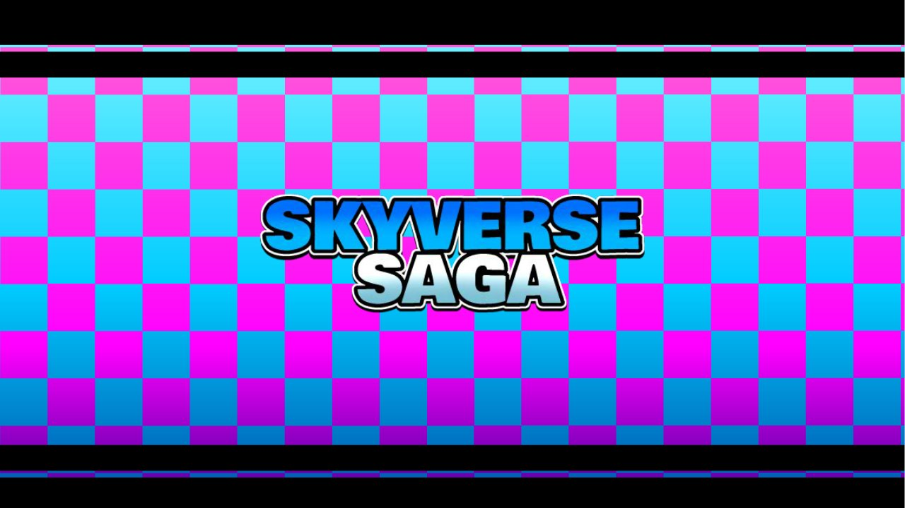
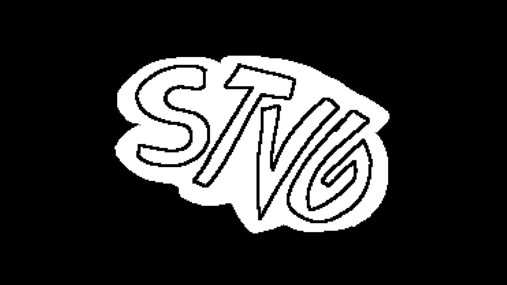
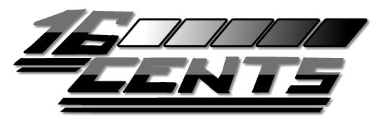

|
|
Mods I work onSkyverseThe official reboot for Vs. Nusky + Skyverse, directed by Dawn and Alex. I work on this mod as a coder. Vs. Sky Redux / Heartbreak HavocThe official remake of the original Vs. Sky mod by bbpanzu, directed by Dawn. As of right now, I am the only coder on this mod. Skyverse SagaA skyverse fan mod being directed by JeremiahAnimates, Dork, and.... ME!!!! I work on this mod as a co-director, coder, and charter. STVGThis mod is a compilation of a whole lot of mods my friend (STVG) has directed and extras! I mainly do the code for this mod, but I also did a few art assets, mainly in the faucet covers. STVG16 cents is originally a parody mod of 17 Bucks, but by now it's kinda grown to be its own thing. Directed by JeremiahAnimates btw teehee! I appear in some of the songs and I code. |
website made by jackie!! (that's me!)